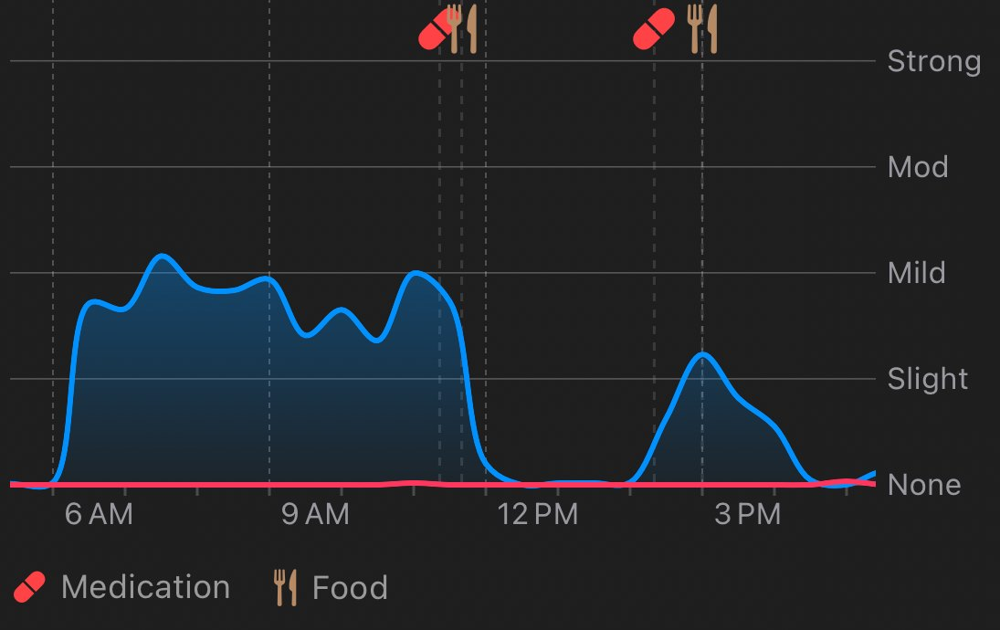
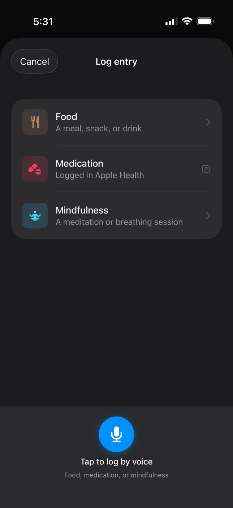
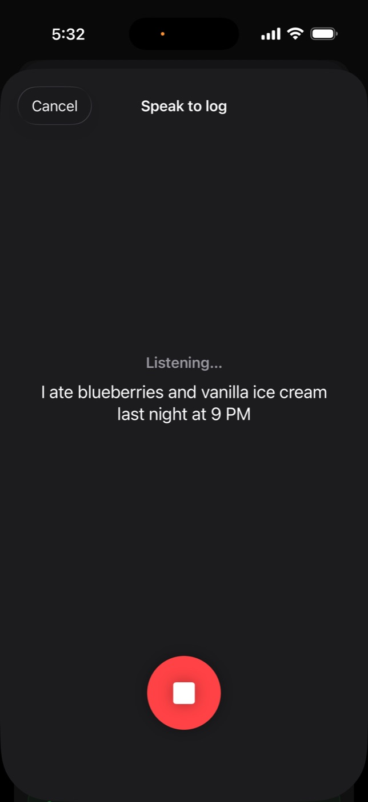
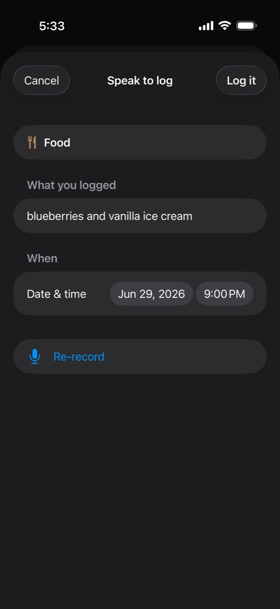
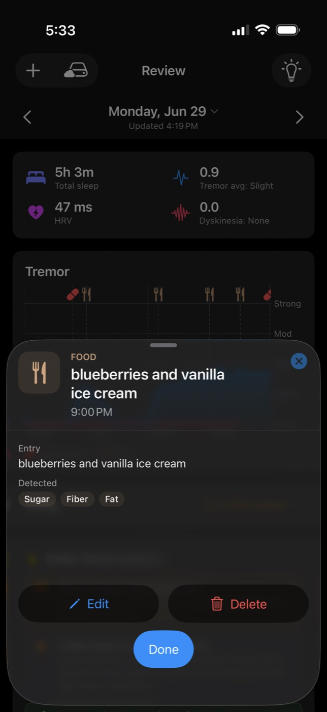
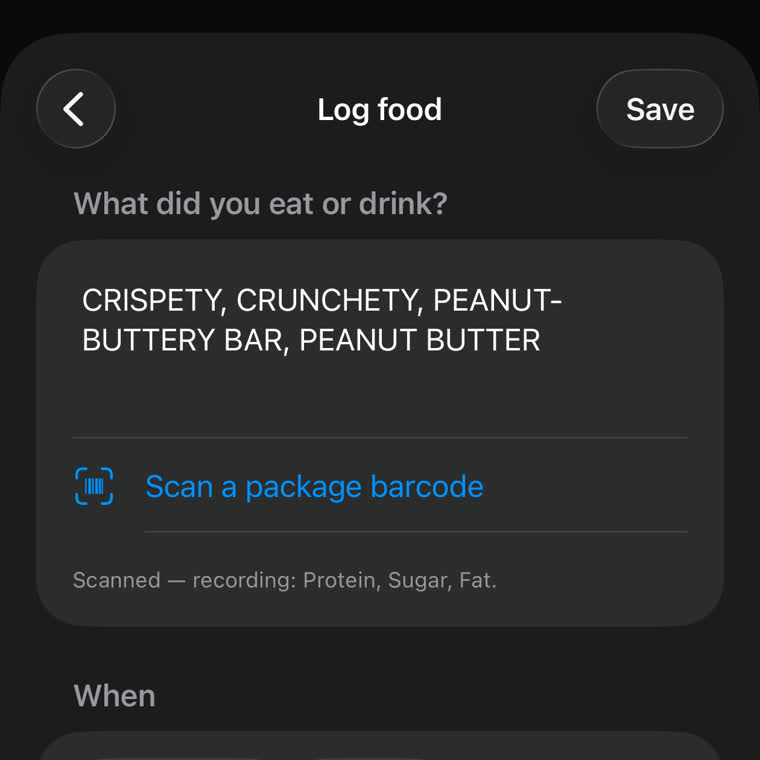
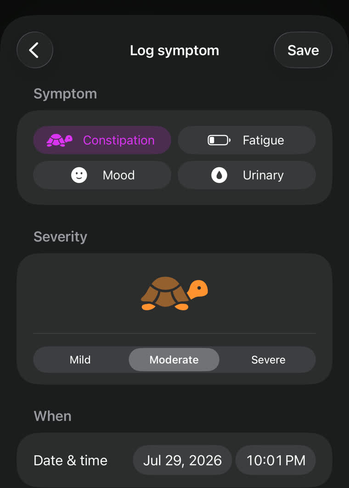
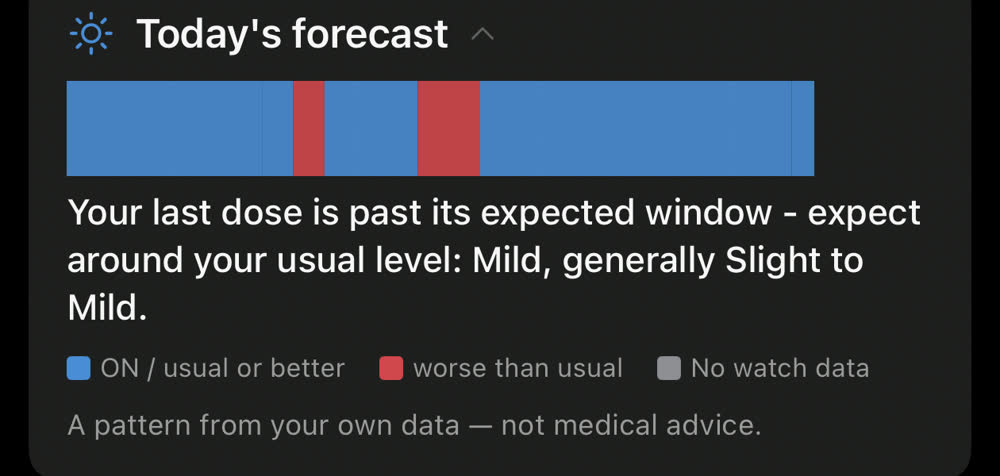
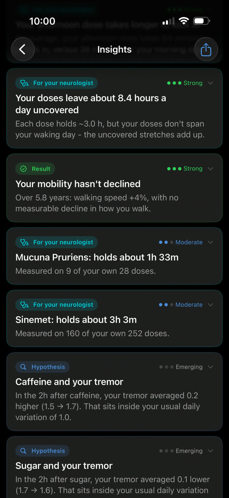

No two people experience Parkinson's the same way. Kampa passively monitors your tremor and dyskinesia through Apple Watch, correlates every dose, meal, workout, and night of sleep, and surfaces the patterns that are true for you - so you can adjust your life around what actually affects you. No manual symptom tracking. No daily check-ins.
Built around your Apple Watch. Correlated against everything.
Most health apps ask you to do the work. Kampa does the watching - continuously, quietly, without interruption. Nothing to wear beyond the watch you already own, and no session to start.
📈
Tremor & dyskinesia, all day
Apple's Movement Disorder API reads both tremor and dyskinesia continuously - the two motor signals that shape a Parkinson's day. A glance at your wrist shows the latest reading and the shape of the day, and your iPhone wakes the Watch to sync in the background, so the data keeps flowing without you doing a thing.
💊
Medication correlation
Tracks what happens to your movement in the 30-90 minutes after every dose. Wearing-off timing, effectiveness, and duration - surfaced automatically.
🎙️
Log by voice
Kampa reads what Apple Health already tracks - sleep, HRV, workouts, daylight - automatically. What you note yourself, like a meal or a dose, takes just a sentence - by voice or a quick tap. Built for tremor-affected hands, so logging never becomes a chore.
✦
Daily observations & cross-day Insights
No dashboards to interpret. Kampa reads each day in plain language - and across weeks and months, a separate Insights view surfaces longer patterns, each with an honest confidence level and ready to discuss with your neurologist.
The app
Real data. Real patterns.
One real day in Kampa - Monday, June 29. Nothing staged, nothing simulated. This is what the app actually recorded.
🛏️
5h 3m
Total sleep
📈
0.9
Tremor avg · Slight
〰️
0.0
Dyskinesia · None
💜
47 ms
HRV
Tremor & dyskinesia - one real day, one timelineEvery dose and meal, marked where it happened

Both motor signals on one chart. Today, dyskinesia barely registered - Kampa still catches the small upticks it did find, around 11 AM and 5 PM.
Tremor
Shake, minute to minute
Dyskinesia
Involuntary movement
💊
Medication
Every dose, to the minute
🍽️
Food
Meals, ready to correlate
A meal, a dose, a mindfulness session - the things you note yourself, you just say. Kampa transcribes on device, works out what you meant, and files it at the right time. Even "last night at 9 PM" lands on the right day.

1Start anywhereTap + and hit the mic - food, medication, mindfulness, or a symptom

2Just say it"blueberries and vanilla ice cream last night at 9 PM"

3Kampa understandsSorted into food, timed to 9 PM - no forms

4Filed & detectedAuto-tags Sugar, Fiber, Fat - ready to correlate

Anything in a wrapper, scan it
Point the camera at a barcode and the product and its nutrition fill themselves in. Kampa searches 439,082 products in an 11.8 MB file bundled inside the app - no network call, nothing leaves your phone.

A symptom, in two taps
Constipation, fatigue, mood and urinary symptoms, each with a severity, saved straight to Apple Health and marked on your timeline. Log one when it's present - a normal day needs no entry, so there's no daily checklist to fall behind on.
Today's forecast
What to expect today - before it happens.
Kampa learns how your doses actually play out - when each one kicks in, how long it holds, when it fades - then runs the rest of your day forward: the ON windows when you're steady, and the OFF windows when you're likely to wear off.
Not a textbook drug curve. Each of your medications gets its own timing - learned from how it actually behaves for you, even how the same dose lands differently in the morning than at night. It tells you what to expect, never what to do - a pattern to plan around and bring to your neurologist, never a dosing instruction.
And when no dose is active - a day you haven't dosed yet, or hours after the last one has cleared - it stops projecting windows and shows your own typical range instead, saying which it's doing and why.

Glucose
On the same timeline.
Wear an over-the-counter glucose sensor - Abbott Lingo, Dexcom Stelo, no prescription - and Kampa reads it straight from Apple Health, drawing your glucose curve in its own panel, time-aligned right under your tremor chart.
Touch and hold anywhere, and a crosshair sweeps every panel at once - a dose, a meal, a tremor uptick, an ON/OFF forecast window, and a glucose swing all line up to the same minute. Collapse a panel when you want fewer signals in view. Kampa works fully without a sensor, too.
Insights
The patterns you'd never spot yourself.
A single day shows what happened. Across weeks and months, the Insights view surfaces the longer patterns - how your medication really performs, when wearing-off tends to hit, how your walking is trending - each with an honest confidence level, and only when the data actually supports it.

Ranked by confidenceEmerging, Moderate or Strong - and the label is earned, not decorative.
Every medication measured separatelyEach substance gets its own card and its own numbers, because averaging two drugs together hides both. Whether a card exists depends on whether you take it - not on whether medicine has ruled on it.
Counted against your own doses"Measured on 160 of your own 252 doses" - you can always see how much data sits behind a claim.
It will tell you when there's nothing thereCaffeine comes back as "inside your usual daily variation" - the app's own way of saying it found nothing. A finding of no effect is still a finding, and Kampa reports it rather than inventing a pattern.
Your health, your data
Privacy isn't a feature. It's the architecture.
The data Kampa handles is about as personal as it gets - continuous movement, tremor, sleep, heart rate. For a neurological condition, that can reveal how your day went, whether your medication is working, even how things are changing over time. Data this personal should stay under your control - so Kampa keeps it on your device, backed up to your own private iCloud. Read the full privacy policy.
📱
Processed on your device
Everything Kampa records is processed and stored on your iPhone and Apple Watch first. Your health data starts and stays with you.
☁️
Your own private iCloud
Backup runs through your personal private iCloud (Apple's CloudKit), under your account. No Kampa account to create, no Kampa server.
🔍
Nothing hidden
The app shows you exactly what's stored - every record type, count, and the full date range. Lose your phone? Reinstall and it all comes back.
🔒
Never sold, always yours
Kampa will never sell or share your health data - not with advertisers, data brokers, or researchers. You control what it's ever used for.
Why Kampa exists
"Parkinson's is a cause we care about deeply - a condition that makes every day unpredictable and erodes quality of life. We couldn't find a tool that would quietly watch, surface patterns, and help someone understand their own body without adding cognitive burden. So we built one. The goal is more than monitoring: it's giving someone with Parkinson's enough self-knowledge to make lifestyle changes, see the difficult days coming, and face them better."
Bhav Bhasin
Co-founder
25+ years building consumer and enterprise software products at Meta, Uber, and PayPal - leading product and engineering organizations across safety, risk, infrastructure, and operations. Kampa applies that same discipline to a health problem: ambient-first design, continuous passive sensing, zero cognitive burden.
Business student at UC Berkeley's Haas School of Business. She leads Kampa's external presence - crafting content that makes complex neuroscience feel human and accessible - and shapes product direction and roadmap. She believes the best health tools get out of patients' way, and works to reach the people who need them most.
The Sanskrit word for "tremor." From Kampavata (कम्पवात) - the Ayurvedic term for what modern medicine calls Parkinson's disease, described in Indian medicine centuries before James Parkinson named it in 1817. The name isn't a metaphor - it is the oldest clinical term for the condition this app was built to understand.
What's new
Recently shipped.
The three most recent. Each release gets a closer look on LinkedIn.
Jul 2026
A card for each of your medications
Kampa now measures every substance you take on its own terms - how long each one holds, and how many of your own doses that measurement rests on. Sinemet and Mucuna Pruriens get separate cards, because they behave differently and averaging them together hides both. Whether a card exists depends only on whether you take the substance, not on whether medicine has decided it works.
Jul 2026
Log a symptom in two taps
Constipation, fatigue, mood, and urinary symptoms, each with a severity, saved straight to Apple Health and marked on your timeline. Log one when it's present - a normal day needs no entry, so there's no daily checklist to keep up with.
Jul 2026
Scan a package instead of describing it
Point the camera at a barcode and Kampa fills in the product and its nutrition - searching 439,082 products in an 11.8 MB file bundled inside the app, with no network call. Typing and voice still work; scanning is just the fastest door for anything that came in a wrapper.
The foundation is running. The roadmap builds toward a complete picture of how Parkinson's moves through a life.
Up next
Deviation alerts
The day-ahead forecast already shows your expected on and off windows. A deviation alert would watch your live tremor against that forecast and speak up only when today diverges from your own pattern - wearing off earlier than usual, say - never a generic "you're due" reminder.
Roadmap
Guided experiments
Turn a pattern into a test. Kampa proposes a hypothesis from your own data - "does a later first dose steady your mornings?" - then labels the days and reads back a verdict.
Roadmap
Gut - absorption patterns
You already log gut symptoms by voice. Next, Kampa lines them up against dose response - because gut motility shapes how well levodopa is absorbed.
Try Kampa.
Kampa is in a private, invite-only beta. Reach out with a bit about yourself and I'll send you a TestFlight invite - or get in touch to collaborate on research or share clinical feedback.